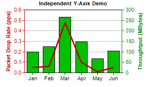

This example demonstrates a chart with two independent y-axis.
ChartDirector supports arbitrary number of axes. The first two x and y axes are most commonly used and can be retrieved using
XYChart.xAxis,
XYChart.xAxis2,
XYChart.yAxis and
XYChart.yAxis2. These axes are by default put at the edges of the plot area.
By default, a data set will bind to the primary y-axis. This can be modified by using
DataSet.setUseYAxis or
DataSet.setUseYAxis2.
The y-axes in this example are of different colors. This is achieved by using
Axis.setColors.
The following is the command line version of the code in "cppdemo/dualyaxis". The MFC version of the code is in "mfcdemo/mfcdemo". The Qt Widgets version of the code is in "qtdemo/qtdemo". The QML/Qt Quick version of the code is in "qmldemo/qmldemo".
#include "chartdir.h"
int main(int argc, char *argv[])
{
// The data for the chart
double data0[] = {0.05, 0.06, 0.48, 0.1, 0.01, 0.05};
const int data0_size = (int)(sizeof(data0)/sizeof(*data0));
double data1[] = {100, 125, 265, 147, 67, 105};
const int data1_size = (int)(sizeof(data1)/sizeof(*data1));
const char* labels[] = {"Jan", "Feb", "Mar", "Apr", "May", "Jun"};
const int labels_size = (int)(sizeof(labels)/sizeof(*labels));
// Create a XYChart object of size 300 x 180 pixels
XYChart* c = new XYChart(300, 180);
// Set the plot area at (50, 20) and of size 200 x 130 pixels
c->setPlotArea(50, 20, 200, 130);
// Add a title to the chart using 8pt Arial Bold font
c->addTitle("Independent Y-Axis Demo", "Arial Bold", 8);
// Set the labels on the x axis.
c->xAxis()->setLabels(StringArray(labels, labels_size));
// Add a title to the primary (left) y axis
c->yAxis()->setTitle("Packet Drop Rate (pps)");
// Set the axis, label and title colors for the primary y axis to red (0xc00000) to match the
// first data set
c->yAxis()->setColors(0xc00000, 0xc00000, 0xc00000);
// Add a title to the secondary (right) y axis
c->yAxis2()->setTitle("Throughtput (MBytes)");
// set the axis, label and title colors for the primary y axis to green (0x008000) to match the
// second data set
c->yAxis2()->setColors(0x008000, 0x008000, 0x008000);
// Add a line layer to for the first data set using red (0xc00000) color with a line width to 3
// pixels
c->addLineLayer(DoubleArray(data0, data0_size), 0xc00000)->setLineWidth(3);
// Add a bar layer to for the second data set using green (0x00C000) color. Bind the second data
// set to the secondary (right) y axis
c->addBarLayer(DoubleArray(data1, data1_size), 0x00c000)->setUseYAxis2();
// Output the chart
c->makeChart("dualyaxis.png");
//free up resources
delete c;
return 0;
}
© 2023 Advanced Software Engineering Limited. All rights reserved.